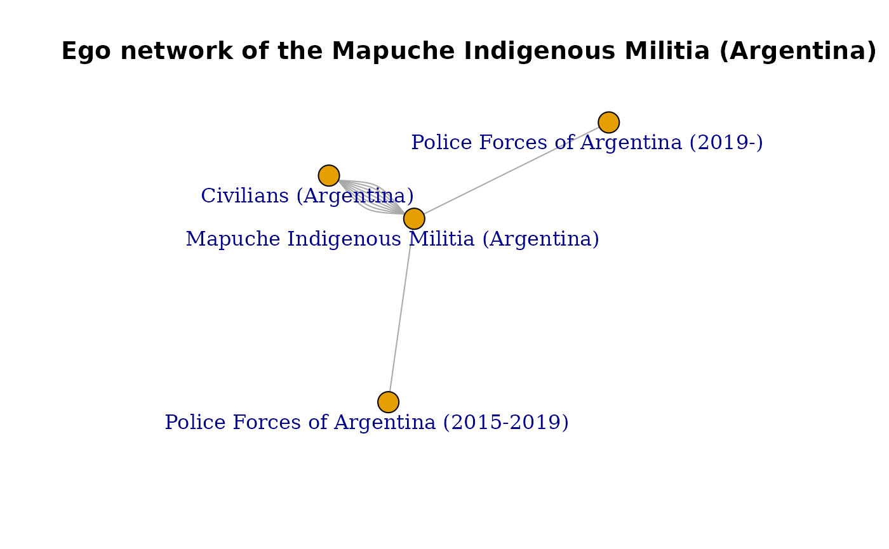

Transformation of ACLED data
2022-11-11
Source:vignettes/articles/acled_transformations.Rmd
acled_transformations.Rmd1. Filter functions - acled_filter_actor()
ACLED’s data utilizes a wide format, which prioritizes having more columns over rows. That often means that it is more complicated to filter values programatically, as they can be spread across columns.
For that matter, sometimes it can take a couple of lines of code to properly filter data in ACLED’s dataset when we are trying to get variables inside wide-formatted columns such as actor1, actor 2, assoc_actor_1,assoc_actor_2, and source.
Because of that, acledR includes
acled_filter_actor() to easily filter the data across all
of these columns while retaining the same structure..
acled_filter_actors(df,
actors,
filter_cols='all')The function is relatively straightforward, taking three arguments:
-
df: the dataset of interest, following ACLED’s column structure, -
actors: a character vector of the actors that you are interested in filtering by, -
filter_cols: a character vector of the columns where to check for the actor(s) to filter.
For filter_cols, you can utilize a vector with the names
of the different actor columns, such as
filter_cols = c(“actor1”,”actor2”)’, or leave it blank
defaulting in filtering across all columns.
Note: that if we utilize the option
filter_cols = ‘all', the df you provide must
follow ACLED’s structure, and thus it must have an
assoc_actor_1 or assoc_actor_2 column.
2. From wide to long - acled_transform()
The other function in the family of data manipulation functions is
acled_transform(). acled_transform() was
created to aid you in switching from a wide format to a long form, if
required, without the need to make a new API call with the monadic
option.
acled_transform(data,
type = "full_actors") acled_transform() requires two arguments:
data: The dataset to transform (has to follow ACLED’s structure)type: A character vector indicating which columns to transpose.
These are the available options to transpose the ACLED data, which we
indicate through the type argumen aret:
full_actor: Transposes all the actor columns in the dataset (actor1, actor2, assoc_actor_1, assoc_actor_2).main_actors: Transposes only actor1 and actor2.assoc_actors: Transposes only assoc_actor_1 and assoc_actor_2 columns.source: Transposes only the source column.all: Transposes all of the aforementioned columns (actor1, actor2, assoc_actor_1, assoc_actor_2, source).
While the ACLED API includes an option to provide a monadic file, this function offers some extra benefits relative to the API’s approach:
Users can “save” API calls by providing an already-gathered dyadic dataset, whereas the API monadic options require two distinct calls for a monadic and a dyadic dataset.
Users can pivot the dataset to their desired option. ACLED’s dataset includes several columns that users may be interested in transposing: actor1 & actor2, assoc_actor_1, assoc_actor_2, and source. The API only pivots the actor1 & actor2 columns into one actor1 column, and the assoc_actor_1 & assoc_actor_2 columns into one assoc_actor_1 column.
acledR Example
Imagine you are doing a network analysis of actor interactions in events of Argentina across 2022; more specifically, you want to start analyzing the interactions of the “Mapuche Indigenous Militia (Argentina)”.
First, you should collect ACLED data and filter it to events
featuring the “Mapuche Indigenous Militia (Argentina)”,
acled_filter_actors() can help you with that.
##
## Attaching package: 'igraph'## The following objects are masked from 'package:dplyr':
##
## as_data_frame, groups, union## The following objects are masked from 'package:stats':
##
## decompose, spectrum## The following object is masked from 'package:base':
##
## union
# Provide your credentials
acled_access(email = "acledexamples@gmail.com", key = "M3PWwg3DIdhHMuDiilp5") # This is an example, you will need to input your credentials.## Success! Credentials authorized
# Request the Argentinian dataset for 2022
argen_acled <- acled_api(countries = "Argentina",
start_date = "2022-01-01",
end_date = "2022-12-30",
acled_access = TRUE,
prompt = FALSE,
log = F)## Requesting data for 1 countries. Accounting for the requested time period and ACLED coverage dates, this request includes 363 country-days.## Proceeding with 1 API calls## Processing API request## Extracting content from API request
# Filter to include only the interactions of your desired actor
mapu_argen <- acled_filter_actors(argen_acled, "Mapuche Indigenous Militia (Argentina)")A crucial step for every network analysis is creating edges and node lists. Given the structure of ACLED’s dyadic dataset, there are four columns to consider: actor1, actor2, assoc_actor_1 and assoc_actor_2. Because you are interested only on the main actors of each event, you are using actor1 and actor2.
A very effective approach to create the node lists is transforming
the dataset towards a long form, where actor1 and
actor2 are spread across rows instead of columns.
acled_transform() is ideal for that:
mapu_actors <- acled_transform(mapu_argen,type = "main_actors")
head(mapu_actors)## # A tibble: 6 × 31
## event_id_cnty event_date year time_precision disorder_type event_type
## <chr> <date> <dbl> <dbl> <chr> <chr>
## 1 ARG11427 2022-09-25 2022 1 Political violence Battles
## 2 ARG11427 2022-09-25 2022 1 Political violence Battles
## 3 ARG11426 2022-08-15 2022 3 Strategic developmen… Strategic…
## 4 ARG11426 2022-08-15 2022 3 Strategic developmen… Strategic…
## 5 ARG11425 2022-07-31 2022 1 Strategic developmen… Strategic…
## 6 ARG11425 2022-07-31 2022 1 Strategic developmen… Strategic…
## # ℹ 25 more variables: sub_event_type <chr>, type_of_actor <chr>, actor <chr>,
## # inter_type <chr>, inter <dbl>, assoc_actor_1 <chr>, assoc_actor_2 <chr>,
## # interaction <dbl>, civilian_targeting <chr>, iso <dbl>, region <chr>,
## # country <chr>, admin1 <chr>, admin2 <chr>, admin3 <lgl>, location <chr>,
## # latitude <dbl>, longitude <dbl>, geo_precision <dbl>, source <chr>,
## # source_scale <chr>, notes <chr>, fatalities <dbl>, tags <chr>,
## # timestamp <dbl>Now start creating the node list by collecting all the unique actors in the new actor column.
## # A tibble: 3 × 1
## actor
## <chr>
## 1 Mapuche Indigenous Militia (Argentina)
## 2 Police Forces of Argentina (2019-)
## 3 Civilians (Argentina)Building the edge list (who interacted with whom) is easy with ACLED data. Our data includes actor1 and actor2 columns to identify the main actors in an event, so you need to subset our data frame to have these two columns. You can keep some other data as it adds context to the interactions.
mapu_edges <- mapu_argen %>%
select(actor1,actor2,event_id_cnty,fatalities,event_type,sub_event_type)Now that the nodes and edges lists have been created, you can plot a simple network graph of actor interactions. The one thing that is key to remember is that ACLED stores actors in actor1 and actor2 regardless of who initiated the event. Thus, interactions in ACLED data are always undirected.
# Create the igraph object
mapu_undirected <- igraph::graph_from_data_frame(
mapu_edges,
vertices = mapu_node_list,
directed = FALSE
)
# Separate the ego network of the Mapuche Militia
mapu_ego <- make_ego_graph(mapu_undirected, order=1, c("Mapuche Indigenous Militia (Argentina)"))
set.seed(69)
plot(mapu_ego[[1]], layout=layout.fruchterman.reingold,
main="Ego network of the Mapuche Indigenous Militia (Argentina)",
vertex.label.dist=-3)
As you can see, through 2022, the “Mapuche Indigenous Militia (Argentina)” interacted mostly with the “Civilians (Argentina)” and also with the police forces of the country of both the Mauricio Macri’s 2015-2019 government and Alberto Fernandez’s (current) governments.
This is a basic example of how to start exploring actor interactions with the ACLED dataset and how to use the transformation functions to shape the dataset structure to fit your methodological requirements.